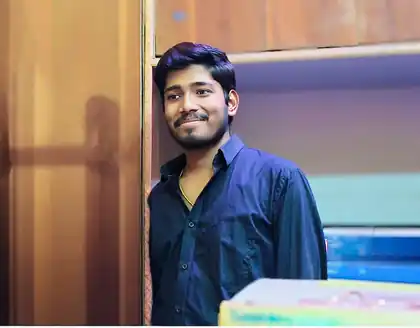

2024–25
From language access to structured data
Anha.ai · AI Resume Parser
Explored translation and document extraction as practical ways to make information easier to use across different formats and language contexts.
Independent software • Intentional engineering
The same work, viewed through a different lens.
I'm Piyush Kumar — a student developer exploring Android engineering, evidence-aware systems, and software that makes complex ideas easier to inspect and use. I care about more than making a demo work: I want to understand its assumptions, constraints, and impact.

“The interesting part isn't only getting software to work. It's understanding why it works, where it fails, and who it serves.”
My work spans native Android interfaces, lightweight retrieval experiments, language-access tools, and scenario-planning prototypes. I tend to start with a practical question, build a working model, then look for hidden assumptions and the next thing that needs testing.
Each project begins with a question. Open a card to see the design intent, technical choices, scope, and current limits. These are prototypes and development projects—not claims of production validation.
A few milestones behind the work: early technical exposure, school, project experiments, internship experience, and ongoing language and cross-cultural learning.
Explored translation and document extraction as practical ways to make information easier to use across different formats and language contexts.
Worked around software modules, API consumption, asynchronous request flows, endpoint debugging, response serialization, and documenting edge cases.
Participated in rapid technical prototyping for environmental and resource challenges and competed in computer-science and computational problem-solving activities.
Developed Android experiences around multilingual reflective dialogue and code explanation, debugging, and optimization suggestions.
Explored retrieval comparisons and claim inspection, while separately documenting the fictional assumptions and limits of a public-welfare scenario simulator.
Taking part in cross-cultural communication and peer-exchange initiatives between India and Korea. Continuing Korean-language study through the King Sejong Institute.
A working toolkit shaped by the projects above—not a list of technologies detached from practice.
Languages used across native applications, small web prototypes, and backend work.
Native user-interface work and application flows with reusable screens and state.
Practical system decomposition and transparent retrieval experiments.
Prototypes and integrations that connect interfaces with services.
Local storage, structured extraction, and application data flows.
Model-backed features treated as suggestions that need inspection and verification.
Building, debugging, testing, version control, and documenting assumptions.
Language learning and cross-cultural exchange alongside technical study.
Separate what comes from a source, what a model infers, and what remains unknown. A neat interface should not hide uncertainty.
Work within device, latency, API, privacy, language, and deployment limits rather than treating the prototype environment as the whole world.
Use working experiments to ask better questions, document caveats, and identify the tests and real-world data needed for stronger conclusions.
English: EF SET certificate, 78/100 (C2 result as stated on the certificate). Korean: continuing structured learning through the King Sejong Institute, including 1B completed and ongoing 3A/3B study.
Interested in Android engineering, transparent AI tools, language-access ideas, or thoughtful software experiments? Get in touch or explore the code behind the projects.
Small prototypes. Real questions. Honest limitations.